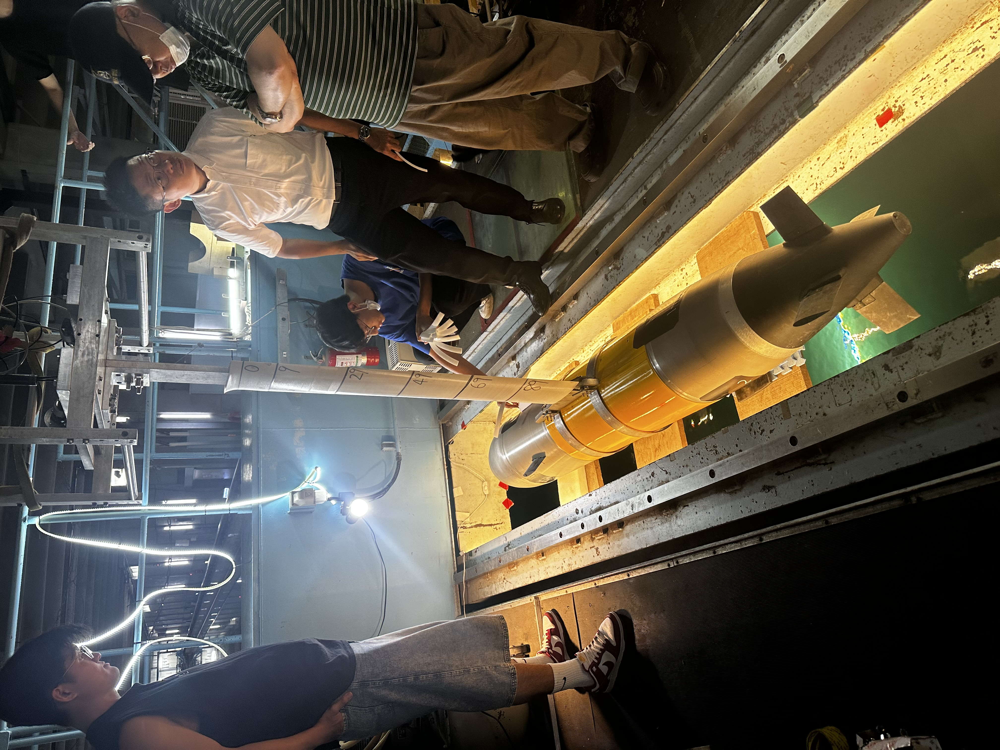
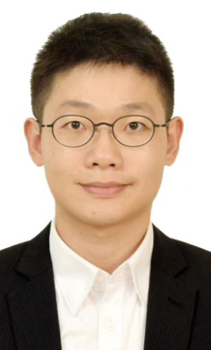
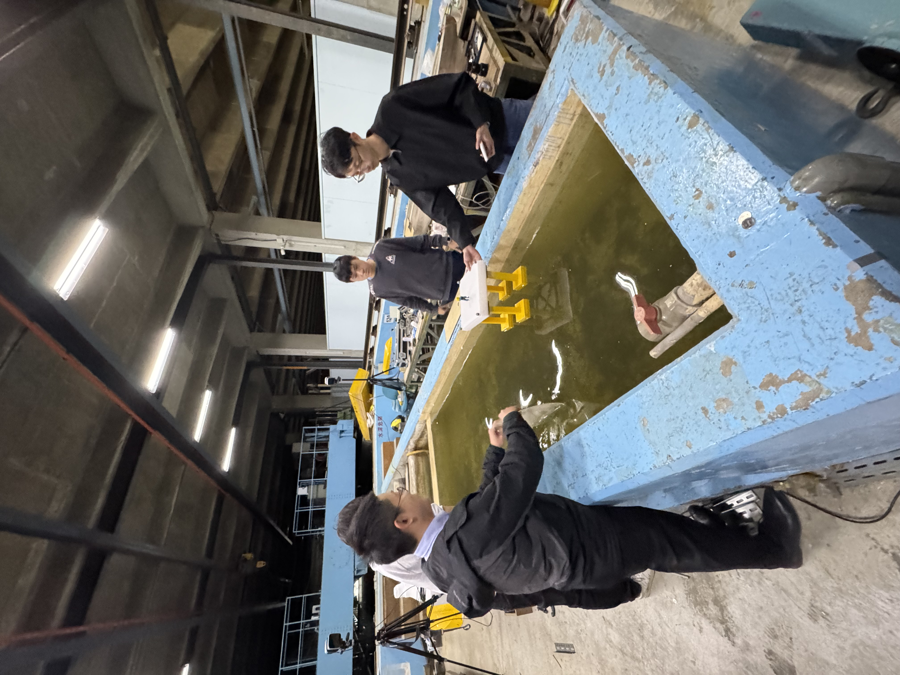
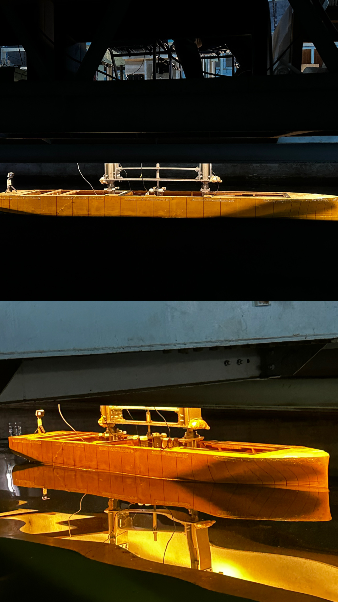
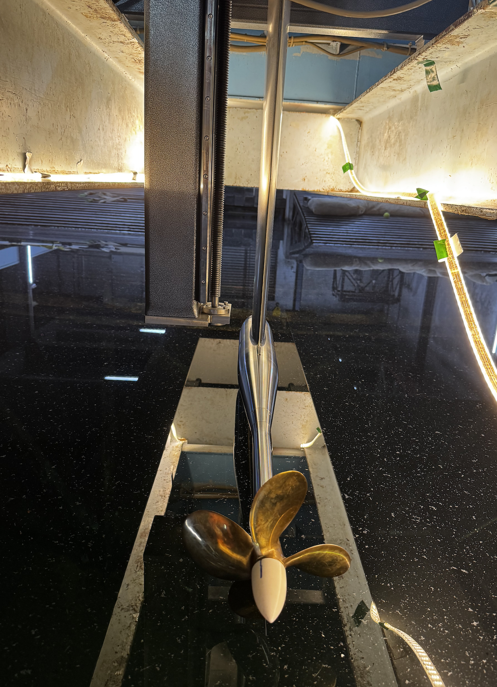
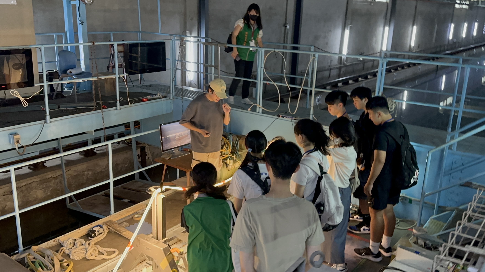
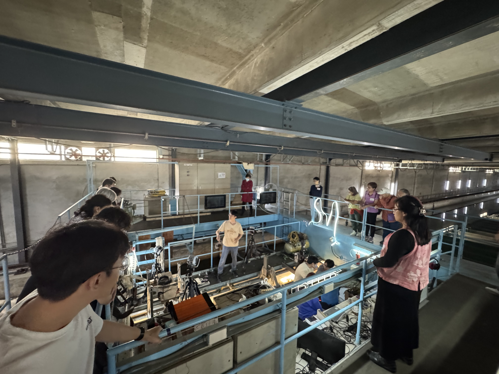

CFD Simulation
使用 OpenFOAM、STAR-CCM+ 等工具進行船體、推進器與自由液面流場分析，輔助實驗設計與結果驗證。
OpenFOAMSTAR-CCM+Free SurfaceValidation
透過實驗量測、數值模擬與工程設計，建立船舶水動力與海洋工程系統之完整研究能力。

本實驗室聚焦於船舶水動力、幾何造型、船舶設計、計算流體力學與船模試驗。研究團隊以大型拖曳水槽為主要實驗平台，量測船體、推進器與海洋結構物在不同操作條件下的受力與運動反應。
大型拖曳水槽提供可控制、可重複且可量測的實驗環境，是本實驗室進行船模試驗、阻力試驗、推進系統驗證與浮式平台運動量測的核心設施。

透過拖車系統控制模型與水體之相對運動，搭配力感測器、動作捕捉系統、螺槳量測儀與影像紀錄，可建立完整的船舶與海洋工程實驗資料。
本實驗室的特色在於「以實驗為核心」，並結合數值計算與資料分析，支援船舶、推進器與海洋結構物之水動力性能評估。

使用 OpenFOAM、STAR-CCM+ 等工具進行船體、推進器與自由液面流場分析，輔助實驗設計與結果驗證。

利用光學動作捕捉系統量測船模、浮台與海洋結構物之六自由度運動反應。

透過平面運動機構進行船體操縱性與耐海性能試驗，分析橫向力、艏搖力矩與運動響應。

量測螺旋槳推力、扭矩與轉速，建立推力係數、扭矩係數與開放水效率曲線。

進行對轉螺旋槳與吊艙式推進系統試驗，評估推進效率、側向力、方位角效應與推進器交互作用。

於拖曳水槽中量測船模阻力、姿態變化與運動反應，建立船型性能評估與設計改善依據。

針對水上浮式平台與離岸結構物進行運動響應量測，分析波浪與外力作用下之穩定性與動態行為。

透過現場展示與解說，讓學生理解船舶工程、流體力學與模型試驗的實際應用。
我們將實驗規劃、水槽量測、資料處理與 CFD 驗證整合為完整流程，使每一次試驗都能轉化為可判讀、可比較、可回饋設計的工程資訊。
規劃模型尺度、試驗條件、儀器配置與量測項目，確保實驗結果具有可重複性與比較性。
於大型拖曳水槽中進行阻力、操縱、推進、浮體運動與動作捕捉試驗。
處理力、力矩、扭矩、轉速、影像與六自由度運動資料，建立完整實驗資料庫。
利用 CFD 與實驗結果相互驗證，分析流場機制並提升性能預測可信度。
將試驗與分析結果回饋船型、推進器配置與浮式平台設計，支援工程決策。
以水槽實驗為主軸，結合理論模型、CFD 與動態量測，形成船舶與海洋工程跨尺度研究能力。
以大型拖曳水槽進行船體阻力、操縱、耐海、推進與浮體運動試驗，建立可直接支援工程設計的水動力資料。
使用 OpenFOAM、STAR-CCM+ 建立流場模型，與實驗結果交互驗證。
研究 open water、POD、CRP 與船體推進器交互作用。
除了研究工作，實驗室也透過營隊與參訪活動，讓更多學生接觸船舶工程與水槽實驗。

介紹拖曳水槽、模型安裝與試驗流程。

將抽象的流體力學概念轉化為可觀察的實驗現象。
嚴謹的試驗之外，團隊也透過聚餐、討論與共同活動，建立良好的合作默契。
共同完成模型安裝、試驗操作與資料整理。

研究之外的交流，也是團隊默契的一部分。
歡迎對船舶水動力、船模試驗、推進系統、計算流體力學與海洋工程研究有興趣的同學與合作夥伴聯繫我們。
聯絡實驗室